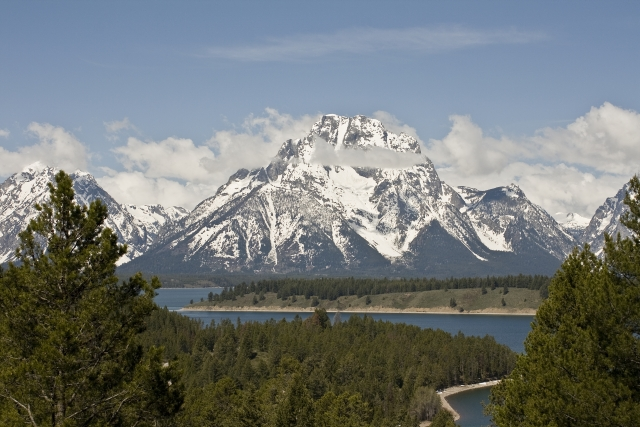
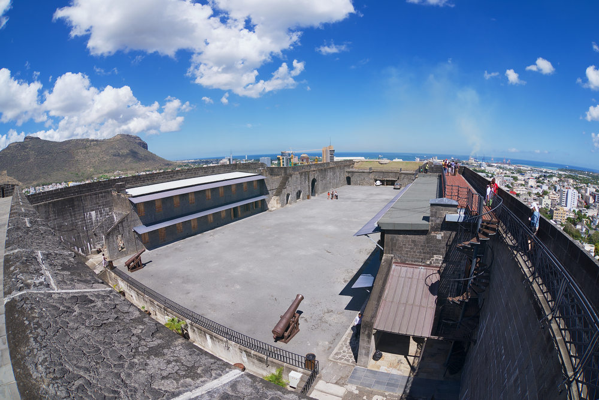
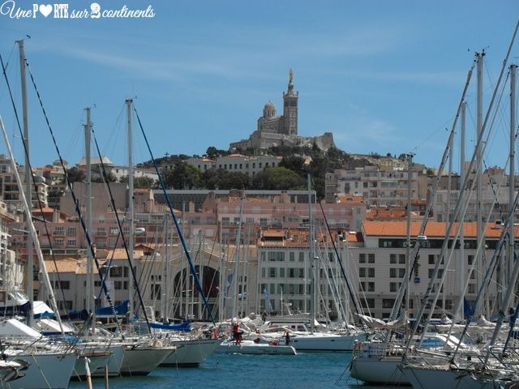
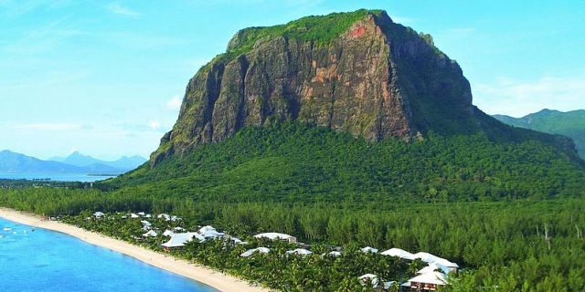
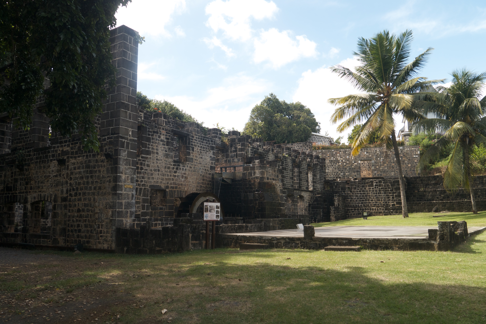
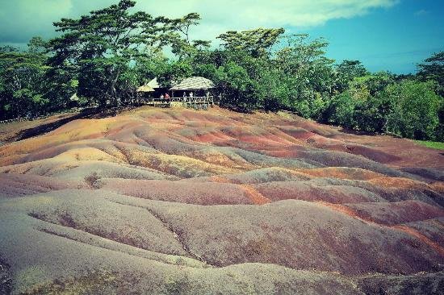
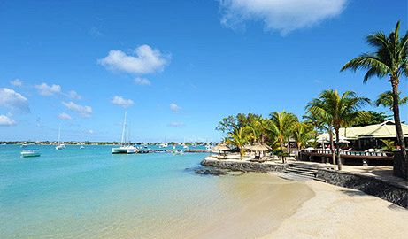
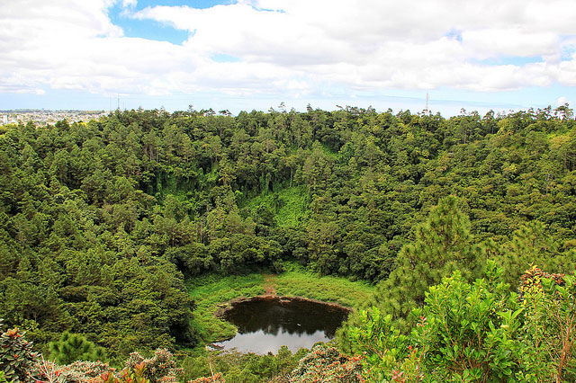

Mauritius - Local Attractions
Mauritius is an Indian Ocean island nation, known for having beautiful beaches, lagoons and reefs. It is one of the 54 countries that made up Africa continent. The mountainous interior includes Black River Gorges National Park, with rainforests, waterfalls, hiking trails and wildlife like the flying fox. Capital Port Louis has sites such as the Champs de Mars horse track, Eureka plantation house and 18th-century Sir Seewoosagur Ramgoolam Botanical Gardens. Below, are some of the local attractions that can help you to enjoy this island:
Signal Mountain
"Signal Mountain offers a pleasant escape after a long day or is an excellent morning boost, with fantastic views of sunrise. As my day at the office winds down, I prepare for yet another trip to the summit. I am a Signal Mountain Summit addict and I am proud of it"(Katie,2016).
2. Fort Adelaide (Citadel)
Building work on Fort Adelaide took ten years to complete and started in 1830. Originally intended as a fortress to protect the British troops from attack by French settlers, by the time it was built, there was little call for its services as a fort. Consequently, it has only really been used as an occasional garrison for troops.
Vieux Grand Port
Located in the south-eastern part of Mauritius, just north of Mahebourg, Vieux Grand Port marks the spot where Dutch sailors first landed on the island in 1638. A fort was built on the site, named after the Dutch ruler Frederik Hendrik, and the remains of this original building can still be seen. By the 18th century, Grand Port was in the hands of the French, who occupied the site until the 19th century, when it came under British administration
Le Morne Brabant
Le Morne is a rugged mountain peninsula that juts out from the south-western tip of Mauritius into the Indian Ocean. It is also a symbol of the fight for freedom made by slaves back in the 18th and 19th centuries. In 2008, the mountain became a World Heritage Site. The peninsula itself gained its name from the rocky crag known as Le Morne Brabant.
Balaclava Ruins
Located at the Baie aux Tortues lie the ruins of a French fort. Built by the island's first French Governor, Balaclava served as an arsenal. Remains that can be seen today include parts of the ancient sea wall, as well as an old flour mill and a lime kiln
Chamarel Coloured Earth Overview
Chamarel is a small village and a major tourist spot located in the south-western of the island. What makes this place unique is the seven coloured layers of sand. It is a unique phenomenon that ttracts people from far and wide. The road to Chamarel is lined with sugarcane and pineapple plantations leading to a valley.
Grand Baie
Grand Baie is a cosmopolitan town located in Rivière du Rempart District, which lies towards northwest of Mauritius. It is a departure point for many cruises towards northern Mauritius; Gunners' Quoin, Flat Island, Round Island, and Serpent Island
Trou aux Cerfs
Trou aux Cerfs is a dormant volcano located in Curepipe. The volcano has a cone and crater and experts believe that the volcano could become active in the coming thousand years.